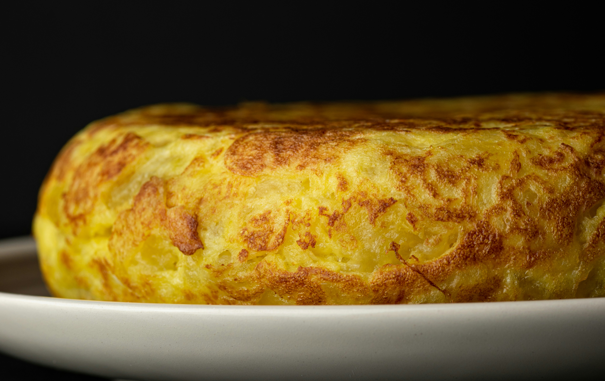

Tortilla de Patatas
Home

Description
The Spanish tortilla, known as tortilla de patatas in the vernacular, is a Spanish potato omelette. It is an incredibly simple recipe with few ingredients, but it makes for a hearty and traditional, delicious Spanish dish that is well loved by its inhabitants.
Ingredients
- Potatoes
- Eggs
- Extra virgin olive oil
Steps
- Cut your potatoes into very thin slices, preferably as equally sized as possible
- Fill a deep non-stick pan with olive oil, turn on the stove at medium heat and add the potatoes once the oil is hot enough – add them very carefully to prevent splashing of hot oil
- Cook the potatoes in the oil at medium-low heat for about 30 minutes
- Set aside the cooked potatoes and cover with tinfoil for 30 minutes
- Add your beaten eggs to the mixture, and then add it back into the pan on medium heat
- Cook for 4 minutes on one side, then use a plate bigger than the size of the pan to flip the tortilla and return it to the pan with the uncooked side facing down
- Cook for another 2-3 minutes, remove the tortilla using the same method and let it cool down for a couple of minutes
- Cut it into pieces and enjoy